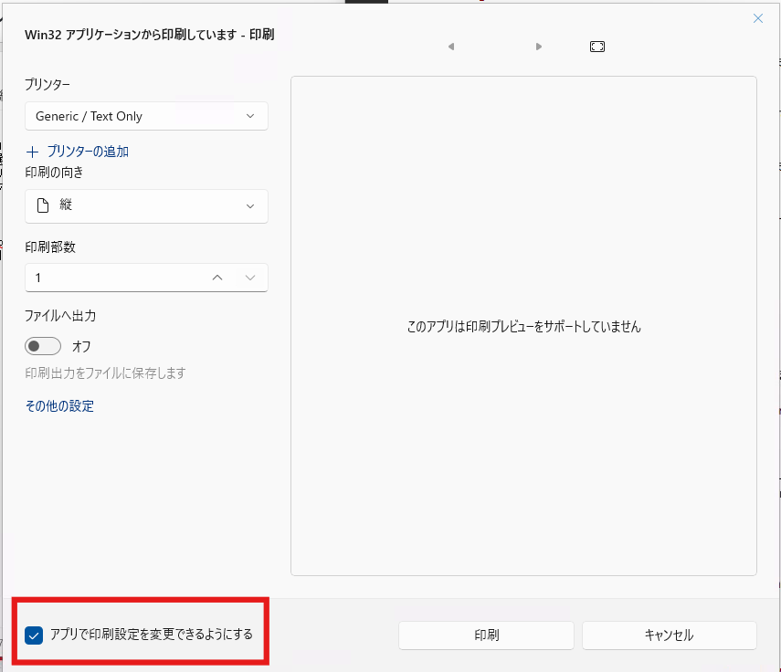

本記事はマイクロソフト社員によって公開されております。
こんにちは、Windows サポート チームの浅野です。
Windows 11 Version 22H2 より、印刷時に起動する印刷ダイアログの UI が刷新され、新しい印刷ダイアログへの変更が行われております。
今回は、新しい印刷ダイアログの動作で、よくお問い合わせをいただく内容や、
皆様にご認識いただきたい情報について本ブログにてご案内をさせていただきます。
“アプリで印刷設定を変更できるようにする” 機能の動作
Windows 11 にて採用されている新しい印刷ダイアログにつきましては、
以下の画像の通り、”アプリで印刷設定を変更できるようにする” という機能がございます。

本設定は、印刷ダイアログ上で印刷の向きなどの設定を変更することで、
ユーザーごとのプリンターの既定の印刷設定も同時に変更される機能となります。
ユーザーごとの既定の印刷設定とは、プリンターのプロパティ上の [全般] タブの [基本設定] の項目となり、
例えば、本チェックが入った状態で用紙の向きを縦から横に変更し印刷を実施した場合、ユーザーごとの基本設定の印刷の向きも横に変更されるため、
その後の印刷時にも印刷の向きなどの変更した設定を引き継ぐ動作となります。
“アプリで印刷設定を変更できるようにする” のチェックを外せば、ユーザーごとの基本設定の変更を行わないため、変更した内容は該当の印刷のみに利用されます。
なお、本機能は、従来より実装されていながらも問題があり動作しておらず、
2025 年 9 月のプレビューリリース更新プログラムで修正されたため、これ以降の更新プログラムで動作いたします。
印刷ダイアログのプレビュー機能について
Windows 11 の印刷ダイアログでは、プレビュー機能が搭載されておりますが、印刷ダイアログだけでは動作せず、アプリケーション側での対応が必要になります。
もし、アプリケーション側が印刷プレビューに対応していない場合には、”このアプリは印刷プレビューをサポートしていません” というメッセージが表示されます。
アプリケーション側の対応は、アプリケーションモデルの変更といった大幅な変更が必要なことが多いため、
印刷の設定の変更や印刷するドキュメントの変更などで印刷プレビューを有効にすることはできません。
なお、下記のブログでご紹介している、印刷ジョブを確認する印刷キューアプリと
本プレビュー機能は異なる機能であることをご注意ください。
印刷キューアプリのプレビュー機能について
管理者権限で実行するアプリケーション
印刷元アプリケーションが管理者権限で動作している場合、新しい UI の印刷ダイアログではなく、
Windows 10 以前から利用されていた従来の印刷ダイアログが表示されます。
新しい印刷ダイアログはユニバーサル Windows プラットフォーム (UWP) アプリであるため、
本動作は印刷ダイアログの仕様となります。
アプリケーションが印刷設定を指定する場合の動作
従来の印刷ダイアログでは、ダイアログの表示時にアプリケーションが使用する印刷キューと指定したり、用紙の向きなどの印刷の設定を指定することが可能でした。
新しい印刷ダイアログでは、アプリケーションが、印刷キューと指定したり、用紙の向きなどの印刷の設定を指定したとしても、その内容は反映されません。
こちらも新しい印刷ダイアログの仕様となることご注意ください。
本投稿が少しでも皆様のお役に立てば幸いです。
※ 本情報の内容 (リンク先などを含む) は、作成日時点でのものであり、予告なく変更される場合があります。
更新履歴
2026/04/02 本 Blog の公開